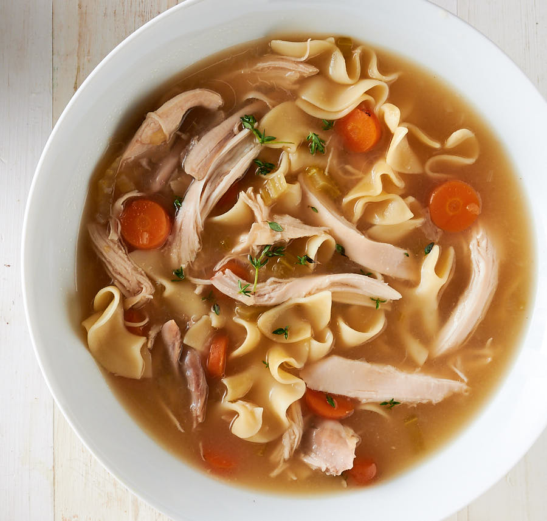

Chunky Chicken Noodle Soup

Delicious, chunky, fast and easy to make!
Ingredients
- 3 quarts water
- 1 (32 fluid ounce) container chicken stock
- 8 cubes chicken bouillon
- 3 skinless, boneless chicken breast halves, cut into 1-inch pieces
- 4 cups egg noodles
- 1 cup frozen peas and carrots
- 2 carrots, chopped
- 2 stalks celery, chopped
- ¼ cup onion, chopped
- 1 teaspoon salt
- 1 teaspoon ground black pepper
- ¼ teaspoon dried basil
- ⅛ teaspoon crushed bay leaf
- ⅛ teaspoon dried oregano
Steps
-
Bring water, chicken stock, and chicken bouillon to a boil in a large stock pot. Add chicken breast, egg noodles, peas and carrots, chopped carrots, celery, onion, salt, black pepper, basil, bay leaf, and oregano. Continue to boil, uncovered, for 20 minutes. Reduce heat to medium and simmer until chicken is no longer pink in the center and noodles are tender, 5 to 10 minutes more.
Source
Back to menu